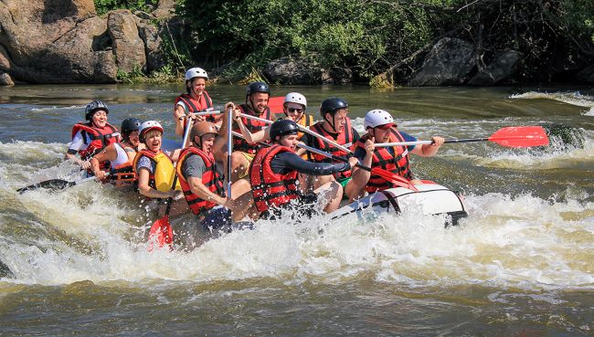
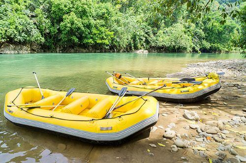
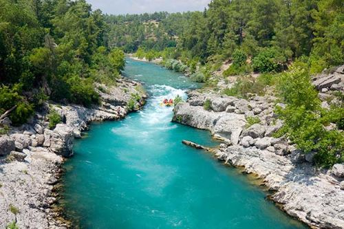
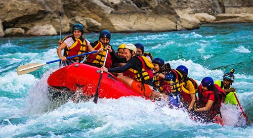
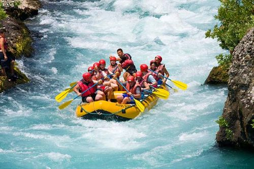
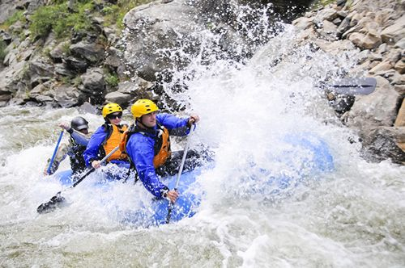
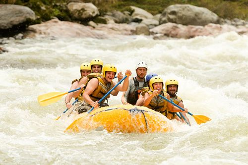

Our mission is to provide safe, thrilling and unforgettable white water rafting adventures for outdoor enthusiasts of all skill levels.


Our mission is to provide safe, thrilling and unforgettable white water rafting adventures for outdoor enthusiasts of all skill levels.
Founded in early 2000's. Menteros Rafting started with only two rafts and a passion for the river. over the past two decades, we have guided thousands of adventurers through some of the most exciting rapids in Kenya.

Today, our certified team continues to prioritize safety, conservation and exceptional customer service, ensuring every trip down the river becomes a lifelong memory.




